注意力机制
Memory-Based
QKV模型，Transformer中采用的是这种。 假设输入为 q，Memory 中以（k，v）形式存储需要的上下文。k 是 question，v 是 answer，q 是新来的 question，看看历史 memory 中 q 和哪个 k 更相似，根据相似度决定权重，使用k 对应的 v，合成当前 question 的 answer。
注意力函数是对一个query向量，让它和一系列的key向量-value向量对进行映射并输出结果的函数，输出是value的加权和，权重是key和query的相似度计算来的；即使key-value对不改变，随着query的改变，输出向量会不一样,但输出的维度是和value一样的。
从本质上理解，Attention是从大量信息中有选择地筛选出少量重要信息并聚焦到这些重要信息上，忽略大多不重要的信息。聚焦的过程体现在权重系数的计算上，权重越大越聚焦于其对应的Value值上，即权重代表了信息的重要性，而Value是其对应的信息。
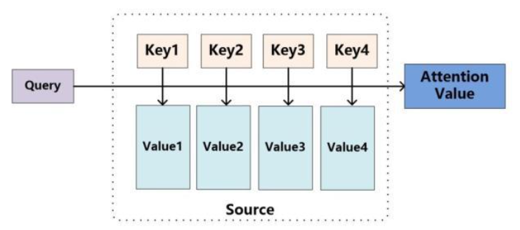
工作流程：
attention函数共有三步完成得到attention value。
- Q与K进行相似度计算得到权值
- 对上部权值归一化
- 用归一化的权值与V加权求和
将Source中的构成元素想象成是由一系列的(Key,Value)数据对构成，此时给定Target中的某个元素Query，通过计算Query和各个Key的相似性或者相关性，得到每个Key对应Value的权重系数，然后对Value进行加权求和，即得到了最终的Attention数值。所以本质上Attention机制是对Source中元素的Value值进行加权求和，而Query和Key用来计算对应Value的权重系数。即可以将其本质思想改写为如下公式：
$$
\text { Attention }\left(\text { Query }{j}, \text { Source }\right)=\sum{i=1}^{N} \text { Similarity }\left(\text { Query }{j}, \text { Key }{i}\right) * \text { Value }_{i}
$$
在自然语言任务中，往往K和V是相同的。这时计算出的attention value是一个向量，代表序列元素$xj$的编码向量。此向量中包含了元素$xj$的上下文关系，即包含全局联系也拥有局部联系。全局联系是因为在求相似度的时候，序列中元素与其他所有元素的相似度计算，然后加权得到了编码向量。局部联系可以这么解释，因为它所计算出的attention value是属于当前输入的$x_j$的。这也就是attention的强大优势之一，它可以灵活的捕捉长期和local依赖，而且是一步到位的。
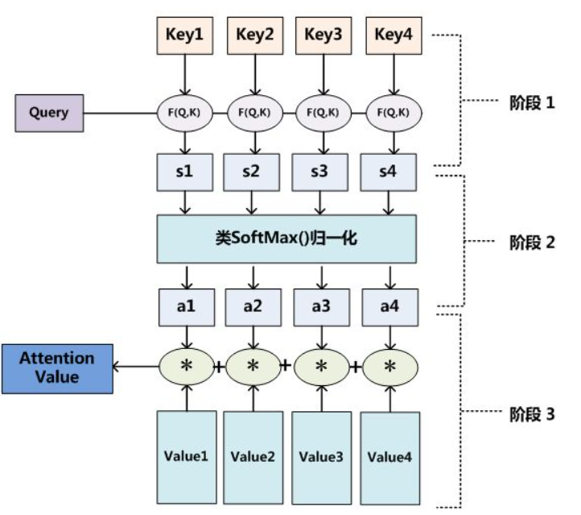
Transformer中的使用
-
对依赖项进行建模，无需考虑它们在输入/输出序列中的距离。
-
完全抛弃了卷积和递归，只使用注意力机制来构建输入和输出之间的全局依赖关系。
-
由于传统的卷积神经网络中，关联来自于任意两个输入/输出位置的信号所需的操作随着二者的位置之间的距离而增长，这使得网络更加难以学习远距离位置之间的依赖关系。Transformer能够将这样的操作减少到一个恒定的数目（任意两个单位之间的距离相同）。同时，考虑到平均注意力加权降低了有效分辨率的缺陷，Transformer采用了多头注意力机制。
-
Self-Attention：一种将单个序列的不同位置关联起来以计算序列表示的注意力机制。
优点：
- 能够捕捉全局和局部的联系，从attention函数就可以看出来，它先是进行序列的每一个元素与其他元素的对比，在这个过程中每一个元素间的距离都是一，因此它比时间序列RNNs的一步步递推得到长期依赖关系好的多，越长的序列RNNs捕捉长期依赖关系就越弱。
- 提供并行性，能通过并行计算减少模型训练时间
- 模型复杂度小，参数少
缺点：
- Attention机制不是"distance-aware"的，它不能捕捉语序顺序，而在NLP中语序顺序是很重要的（对此，Transformer采用的处理方式是Position Encoding，在计算机视觉领域是如何解决的？查阅资料发现同样是采用Position Encoding进行解决的。（待读论文：Image Transformer、Vision Transformer）可否通过预训练使得模型具有识别图像序列顺序的能力？）
Encoder-Decoder
结构图
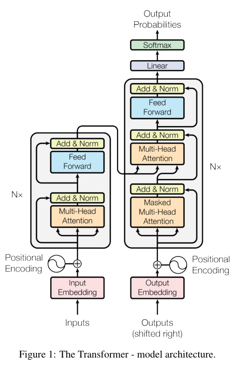
Example【 Bert前篇：手把手带你详解Transformer原理 - 知乎 (zhihu.com) 】：
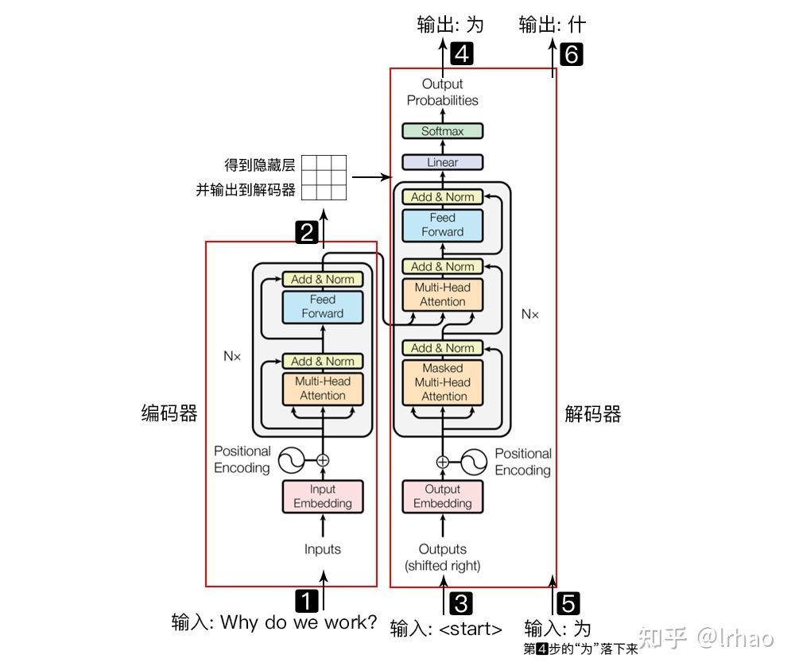
Encoder
由6个相同的层组成，每个层包括两个子层，第一个是多头自注意力机制，第二个是简单的position-wise全连接神经网络。在每个子层周围使用残差连接，然后进行层 normalization。每个sub-层的输出为$LayerNorm(x+Sublayer(x))$。
Q：position-wise指的是什么？
解释一：区别于普通的全连接网络，这里FFN的输入是序列中每个位置上的元素，而不是整个序列，所以每个元素完全可以独立计算，最极端节省内存的做法是遍历序列，每次只取一个元素得到FFN的结果，但是这样做时间消耗太大，“分段”的含义就是做下折中，将序列分成子段，也就是多个子序列，每次读取一个子序列进行FFN计算，最后将多份的结果拼接。
解释二： 从卷积的角度解释，这里的FFN等价于kernel_size=1的卷积，这样每个position都是独立运算的。如果kernel_size=2，或者其他，position之间就具有依赖性了，不能叫做position-wise了。
Decoder
同样是6个相同的层组成，但是每个层包括三个子层，第三个sub-层用于对Encoder堆栈的输出执行多头注意力机制。残差连接与Encoder相同。修改了注意力层以避免当前位置继续参与（attend）到后面的位置中。
Mask：Mask操作是为了避免解码器在训练的时候看到当前时刻看到以后时间的信息。
对于t时刻的query，应该只看到key(1), key(2),…key(t-1)的数据，因为key(t)在当前时刻还不存在。
Masked的作用是使对应value的权值为0，对于query(t)和未来时刻的key的内积，赋值为负无穷大（-inf），这样使用softmax计算权值为0，所以计算output的时候只用到了t-1以前时刻的key-value pair的信息。保证了训练时和预测时的情况是一样的。
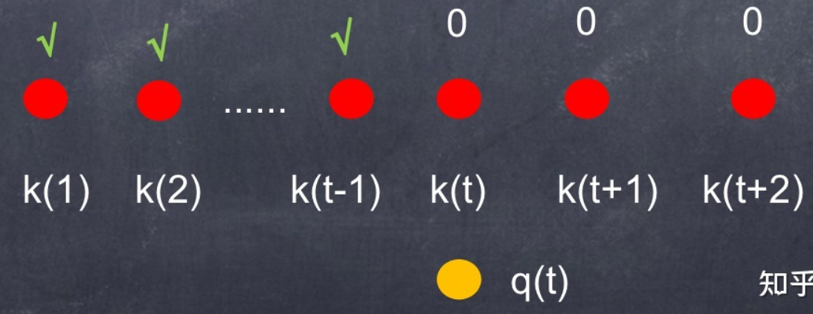
mask的具体做法：（ Bert前篇：手把手带你详解Transformer原理 - 知乎 (zhihu.com) ）
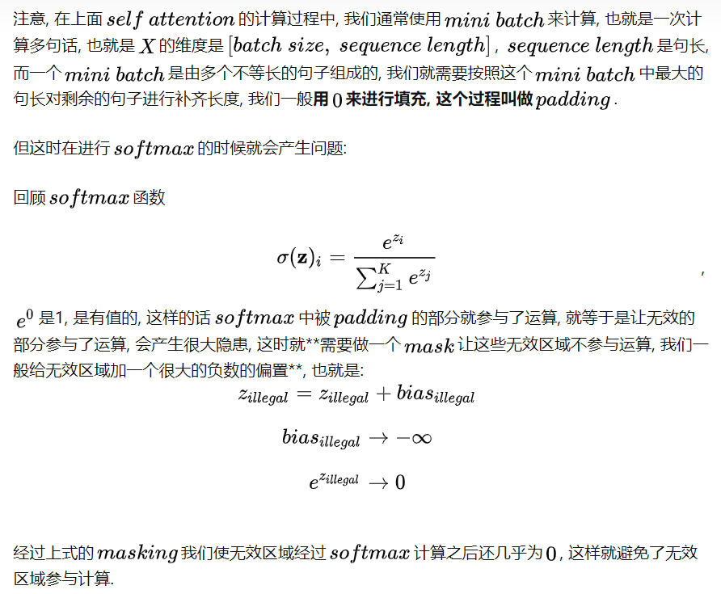
Attention
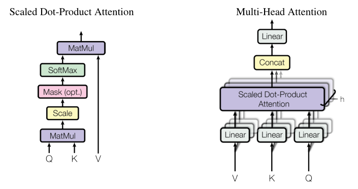
Scaled Dot-Product Attention
输入由维度为$d_k$的queries和key以及维度为$d_v$的values组成。使用所有keys计算queries的点积，并除以$\sqrt{d_k}$，然后用softmax函数获得与values相乘的权重。公式如下：
$$
\text { Attention }(Q, K, V)=\operatorname{softmax}\left(\frac{Q K^{T}}{\sqrt{d_{k}}}\right) V
$$
做法含义： 向量内积是一个向量在另一个向量上的投影长度乘以另一个向量的长度。内积的几何意义是一个向量在另一个向量上的投影，进而内积越大说明相似度越高。
对于attention中计算两个向量之间的相关度，两个常用函数为Additive attention和dot-product（multiple） attention。点积从公式中可以体现出来，Additive attention是使用一个前馈神经网络（只含一个隐藏层）来计算兼容性函数。
二者优缺点分析：dot-product attention，可以利用矩阵运算，计算速度更快，并且更节省空间，但是要求 Q 和 K向量维度相同，如果不同需要进行一定的映射变换。在dk较小时二者表现相似，但是dk较大时，dot-product attention表现不如additive attention，因为dk较大时点积之后的结果较大，求softmax之后，梯度会很小，不利于计算，需要做一定的缩放。
知乎：较长的序列（512）会导致QK的内积的方差很大，相对差距变大，极值做出来softmax会倾向于1， 计算的梯度接近0，导致难以学习，除以sqrt(dk)可以避免这种情况。
参考：
作者采用的方案以及性能上的讨论：由于dot-product可以用高性能的矩阵乘法进行优化，计算速度快，空间上也更优，作者采用了dot-product。当$d_k$较小的时候，两种机制表现相近，Additive在$d_k$值较大的时候，无需对其缩放，因此性能优于dot-product。作者的观点是对于较大的$d_k$，dot-product在规模（magnitude）上会更大，这将softmax函数推入了极小梯度的区域。因此他们在公式中进行了除以$\sqrt{d_k}$这样一个缩放。
Multi-Head Attention
原理：与对keys、values、queries使用一个注意力机制不同，作者提出了一种更有效的方法：使用不同的线性投影，将queries、keys、values分别投影到$d_k$、$d_k$、$d_v$维（进行h次），然后在投影之后的queries、keys、values上并行执行attention function，得到维度为$d_v$的输出，然后将他们连接（concat）起来后再次投影产生最终值。
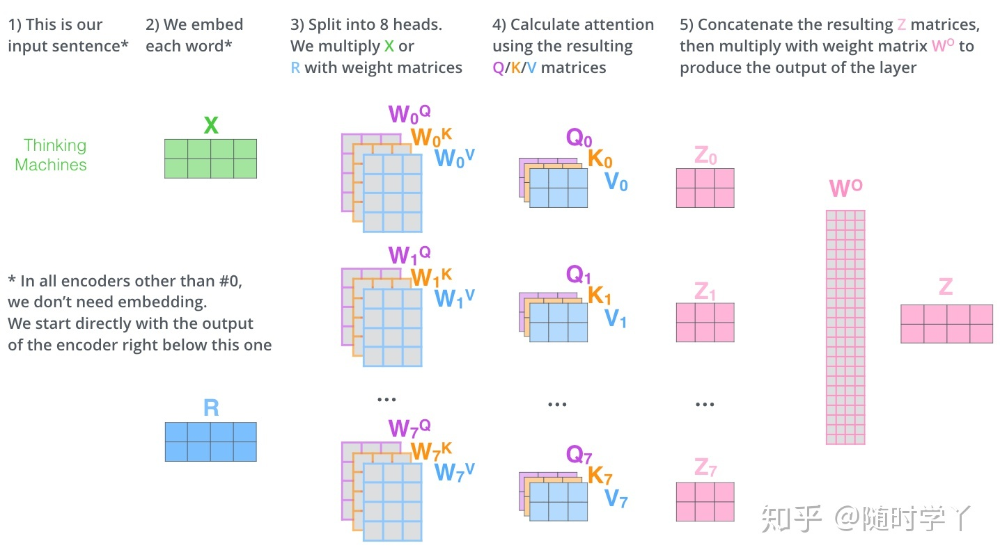
优点：允许模型共同关注来自不同位置的不同表示子空间的信息，对于单个注意力头，平均化会抑制这一点。
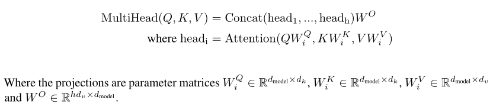
实验参数：$h=8,d_k=d_v=d_{model}/h=64$
性能讨论：由于每个头维度减少，总体计算量与单头注意力机制近似。
Position-wise Feed-Forward Network
除了注意力子层外，编码器与编码器中的每一层都包含一个全连接的前馈神经网络，分别相同应用于每个位置。包含两个线性变化，二者之间有一个ReLU激活函数。
$$
\operatorname{FFN}(x)=\max \left(0, x W_{1}+b_{1}\right) W_{2}+b_{2}
$$
transformer抽取序列信息：attention把序列里的信息抓取出来，在每个点做了一次全局的汇聚，里面包含了感兴趣的序列信息，以至于后面经过mlp做投影，把向量映射到更想要的语义空间，因为每个点都包含了序列相关信息，所以对每个点独立做MLP就可以了，这就是transformer如何抽取“序列信息”并加工的方法。
RNN抽取序列信息：MLP权重W是共用的，时序信息是通过把上一个时刻的输出接到当前时刻，与当前时刻的输入合并，再经过MLP,实现了序列信息的汇聚和提取。
区别：都是用MLP实现语义空间的转换，不一样的是如何传递“序列信息”。
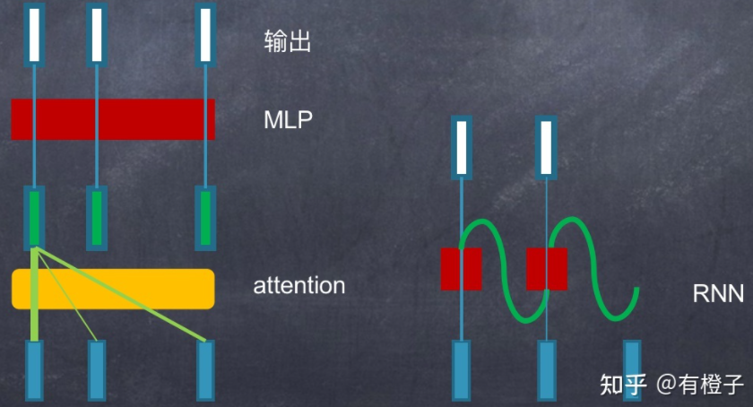
实验参数：
- 输入/输出维度$d_{model}=512$
- inner-层维度$d_{ff}=2048$
Embedding & Softmax
通过学习好的Embedding将输入/输出token转换为维度为$d_{model}$的向量。在嵌入层中，作者对权重乘以$\sqrt{d_{model}}$
原因：Embedding的分布往往是$N(1, \frac{1}{\sqrt{d_{model}}})$
Position Encoding
为了让模型利用序列的顺序，需要在序列中注入关于序列的相对或绝对位置的信息。
做法：在解码器/编码器的堆栈底部加入位置编码（Position Encoding）。位置编码与Embedding具有相同的维度$d_{model}$，二者可以直接相加。位置编码可以有多种选择，通过学习得到的（learned）或是固定的（fixed）。Transformer采用绝对位置编码。
在这里论文中使用了$sin$和$cos$函数的线性变换来提供给模型位置信息:
$$
\begin{aligned}
P E_{(p o s, 2 i)} &=\sin \left(p o s / 10000^{2 i / d_{\text {model }}}\right) \
P E_{(p o s, 2 i+1)} &=\cos \left(p o s / 10000^{2 i / d_{\text {model }}}\right)
\end{aligned}
$$
为何使用self-attention
- 每层的总计算复杂度
- 可并行性
- 网络中远程依赖项之间的路径长度
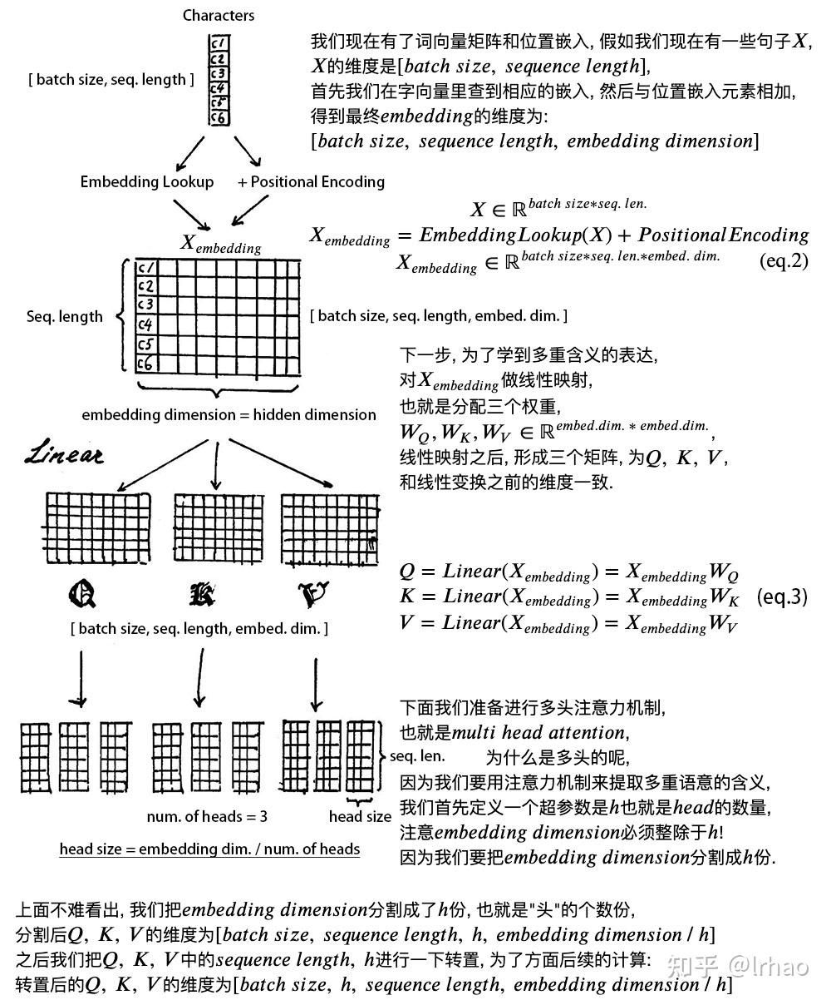
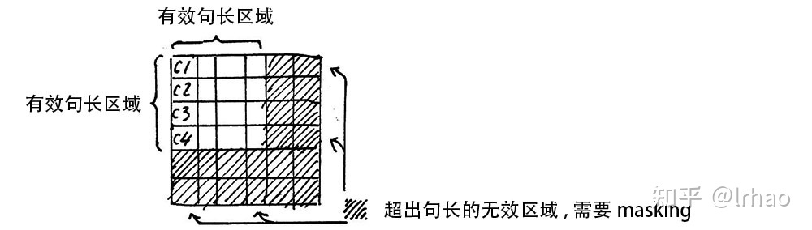
优点
- 并行效率高：相较于RNN 第t时间步的隐藏状态ht要等前一个时间步ht-1的隐藏状态输出之后才能处理； Transformer同时提取所有上下文的信息。
- 信息传递损失小： RNN在序列过长会导致梯度爆炸或梯度消失或遗忘，RNN改进模型LSTM和GRU能够部分解决梯度消失的问题。transformer获取所有位置的信息的距离都是1。
- 信息融合效率高：卷积每次看比较小的窗口，对于距离较远的像素，需要很多层卷积一层一层扩大感受野才能把两个像素融合起来。transformer获取所有位置的信息的距离都是1。